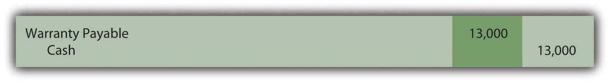
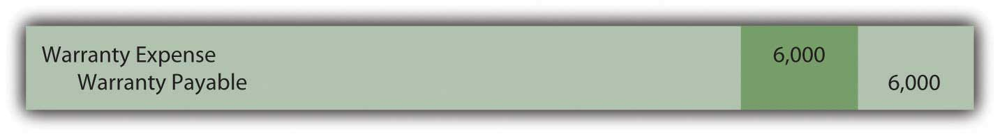
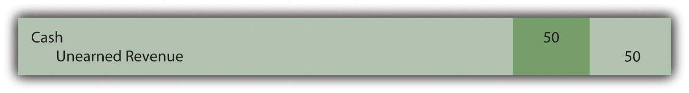
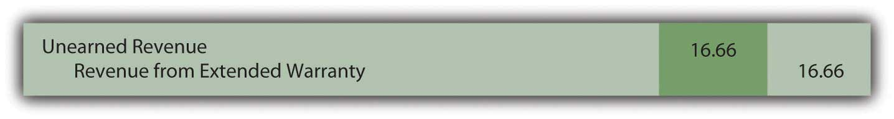
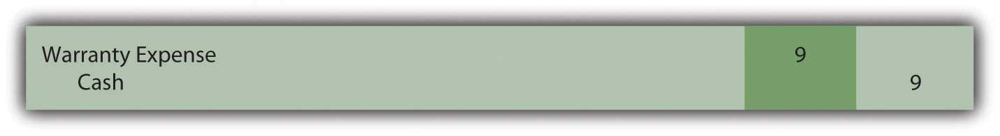

At the end of this section, students should be able to meet the following objectives:
Question: FASB Statement Number 5 includes an embedded product warrantyAn obligation established by the sale of a product where the seller promises to fix or replace the product if it proves to be defective. as an example of a contingency. A company sells merchandise such as a car or a microwave and agrees to fix certain problems if they arise within a specified period of time. If the car’s transmission breaks, for example, the seller promises to replace it. Making the sale with a warranty attached is the past event that creates this contingency. However, the item acquired by the customer must break before the company has an actual loss. That outcome is uncertain.
In accounting for contingencies, several estimates are required:
As an example, General Electric reported on its December 31, 2008, balance sheet a liability for product warranties totaling over $1.68 billion. That is certainly not a minor obligation. In the notes to the financial statements, the company explains, “We provide for estimated product warranty expenses when we sell the related products. Because warranty estimates are forecasts that are based on the best available information—mostly historical claims experience—claims costs may differ from amounts provided.” How does a company record and report contingencies such as product warranties?
Answer: In accounting for warranties, cash rebates, the collectability of receivables and other similar contingencies, the likelihood of loss is not an issue. These losses are almost always probable. For the accountant, the challenge is in arriving at a reasonable estimate of that loss. How many microwaves will break and have to be repaired? What percentage of cash rebate coupons will be presented by customers in the allotted time? How often will a transmission need to be replaced?
Many companies utilize such programs on an ongoing basis so that data from previous offers will be available to help determine the amount of the expected loss. However, historical trends cannot be followed blindly. Officials still have to be alert for any changes that could impact previous patterns. For example, in bad economic periods, customers are more likely to take the time to complete the paperwork required to receive a cash rebate. Or the terms may vary from one warranty program to the next. Even small changes in the wording of an offer can alter the expected number of claims.
To illustrate, assume that a retail store sells ten thousand refrigerators during Year One for $400 cash each. The product is covered by a warranty that extends until the end of Year Three. No claims are made in Year One but similar programs in the past have resulted in repairs being made to 3 percent of the refrigerator at an average cost of $90. Thus, this warranty is expected to cost a total of $27,000 (ten thousand units × 3 percent or three hundred claims × $90 each). Immediate recognition is appropriate because the loss is both probable and subject to reasonable estimation.
Although no repairs are made in Year One, the $27,000 is recognized in that period. All requirements for a liability have been met. In addition, the matching principle states that expenses should be recorded in the same period as the revenues they help generate. The revenue from the sale of the refrigerators is recognized in Year One so the warranty expense resulting from those revenues is also included at that time.
Figure 13.11 Year One—Sale of Ten Thousand Refrigerators for $400 Each

Figure 13.12 Year One—Recognize Expected Cost of Warranty Claims

This warranty is in effect until the end of Year Three. Assume in the year following the sale (Year Two) that repairs costing $13,000 are made for these customers at no charge. Refrigerators break and are fixed as promised. The expense has already been recognized in the year of sale so the payments made by the company serve to reduce the recorded liability. They have no additional impact on net income.
Figure 13.13 Year Two—Payment for Repairs Covered by Warranty
At the end of Year Two, the warranty payable T-account in the general ledger holds a balance of $14,000 ($27,000 original estimation less $13,000 payout for repairs to date). Because the warranty has not expired, company officials need to evaluate whether this $14,000 liability is still a reasonable estimation of the remaining costs to be incurred. If so, no further adjustment is made.
However, the original $27,000 was an estimate. More information is now available, some of which might suggest that $14,000 is no longer the best number to be utilized for the final period of the warranty. As an illustration, assume that a design flaw has been found in the refrigerators and that $20,000 (rather than $14,000) is now the estimate of the costs to be incurred in the final year of the warranty. The $14,000 is no longer appropriate. The reported figure must be updated to provide a fair presentation of the information that is now available. Estimations should be changed at the point that new data provide a clearer vision of future events.
Figure 13.14 December 31, Year Two—Adjust Warranty Liability from $14,000 to Expected $20,000
In this adjusting entry, the change in the expense is not recorded in the period of the sale. As discussed earlier, no retroactive changes are made in previously reported figures unless fraud occurred or an estimate was held to be so unreasonable that it was not made in good faith.
Question: Not all warranties are built into a sales transaction. Many retailers also provide extended product warrantiesAn obligation whereby the buyer of a product pays the seller for the equivalent of an insurance policy to protect against breakage or other harm to the product for a specified period of time. but for an additional fee. For example, assume a business sells a high-definition television with an automatic one-year warranty. The buyer receives this warranty as part of the purchase price. The accounting for that first year is the same as just demonstrated; an estimated expense and liability are recognized at the time of sale.
However, an additional warranty for three more years is also offered at a price of $50. If on January 1, Year One, a customer chooses to acquire this three-year coverage, what recording is made by the seller? Is an extended warranty purchased by a customer reported in the same manner as an automatic warranty embedded within a sales contract?
Answer: Extended warranties, which are quite popular in some industries, are simply insurance policies. If the customer buys the coverage, the product is insured against breakage or other harm for the specified period of time. In most cases, the company is making the offer in an attempt to earn extra profit. The seller hopes that the amount received for the extended warranty will outweigh the eventual repair costs. Therefore, the accounting differs here from that demonstrated for an embedded warranty that was provided to encourage the sale of the product. Because of the matching principle, the anticipated expense was recognized in the same period as the revenue generated by the sale of the product.
By accepting money for an extended warranty, the seller agrees to provide services in the future. This contract is much like a gift card. The revenue is not earned until the earning process is substantially complete in the future. Thus, the $50 received for the extended warranty is initially recorded as “unearned revenue.” This balance is a liability because the company owes a specified service to the customer. As indicated previously, liabilities do not always represent future cash payments.
Figure 13.15 January 1, Year One—Sale of Extended Warranty Covering Years 2–4
Note that no expense was estimated and recorded in connection with this warranty. As explained by the matching principle, no expense is recognized until the revenue begins to be reported.
Because of the terms specified, this extended warranty does not become active until January 1, Year Two. The television is then covered for a three-year period. The revenue is recognized, most likely on a straight-line basis, over that time. The $50 will be recognized at the rate of 1/3 per year or $16.66.
Figure 13.16 December 31, Year Two (Three and Four)—Recognition of Revenue from Extended Warranty
In any period in which a repair must be made, the expense is recognized as incurred because revenue from this warranty contract is also being reported. To illustrate, assume that on August 8, Year Two, a slight adjustment must be made to the television at a cost of $9. The product is under warranty so there is no charge to the customer for this service. The expense recognized below is matched with the Year Two revenue recognized above.
Figure 13.17 August 8, Year Two—Repair Television under Contract
Link to multiple-choice question for practice purposes: http://www.quia.com/quiz/2092999.html
Question: Previously, the current ratio (current assets divided by current liabilities) and the amount of working capitalFormula measuring an organization’s liquidity (the ability to pay debts as they come due); calculated by subtracting current liabilities from current assets. (current assets minus current liabilities) were discussed. Are there additional vital signs that relate to current liabilities that should be analyzed when looking at an organization? Should decision makers be aware of any specific ratios or amounts in connection with current liabilities that provide especially insightful information about a company’s financial health and operations?
Answer: In studying current liabilities, the number of days a business takes to pay its accounts payable is a figure of interest. If a business begins to struggle, the time of payment tends to lengthen because of the difficulty in generating sufficient cash amounts. Therefore, an unexpected jump in this number is often one of the first signs of financial problems and warrants concern.
To determine the age of accounts payableA determination of the number of days that a company takes to pay for the inventory that it buys; it is computed by dividing accounts payable by the average inventory purchases per day during the period. (or the number of days in accounts payable), the amount of inventory purchased during the year is first calculated:
cost of goods sold = beginning inventory + purchases – ending inventory,Thus,
purchases = cost of goods sold – beginning inventory + ending inventory.Using this purchases figure, the number of days that a company takes to pay its accounts payable on the average can be found. Either the average accounts payable for the year can be used below or just the ending balance.
purchases/365 = average purchases per day accounts payable/average purchases per day = average age of accounts payableAs an illustration, the following information comes from the 2008 financial statements for Safeway Inc.
Figure 13.18 Information from 2008 Financial Statements for Safeway Inc.

The total of inventory purchases by Safeway during 2008 was over $31 billion:
purchases = cost of goods sold – beginning inventory + ending inventory purchases = $31.589 billion – $2.798 billion + $2.591 billion purchases = $31.382 billion.The average purchases amount made each day during 2008 by this company was nearly $86 million:
purchases/365 $31.382/365 = $85.978 million.The average age of ending accounts payable for Safeway at this time is between twenty-eight and twenty-nine days:
accounts payable/average daily purchases $2.449 billion/$85.978 million = 28.48 days.To evaluate that number, a decision maker would need to compare it to previous time periods, the typical payment terms for a business in that industry, and comparable figures from other similar corporations. Interestingly, the same computation for the previous year (2007) showed that Safeway was taking over thirty-four days to pay off its accounts payable during that period.
Many companies incur contingent liabilities as a result of product warranties. If the warranty is given to a customer along with a purchased item, an anticipated expense should be recognized at that time as well as the related liability. If the cost of this type of embedded warranty eventually proves to be incorrect, the correction is made when discovered. Companies also sell extended warranties, primarily as a means of increasing profits. These warranties are recorded initially as liabilities and are reclassified to revenue over the time of the obligation. Subsequent costs are expensed as incurred to align with the matching principle. Expenses are not estimated and recorded in advance. Analysts often determine the average age of accounts payable to determine how quickly liabilities are being paid as an indication of an entity’s financial health.
Following is a continuation of our interview with Kevin G. Burns.
Question: Analysts often look closely at current liabilities when evaluating the future prospects of a company. Is there anything in particular that you look for when examining a company and its current liabilities?
Kevin Burns: For almost any company, there are a number of things that I look at in connection with current liabilities. I always have several questions where possible answers can concern me. I am interested in the terms of the current liabilities as well as the age of those liabilities. In other words, is the company current with its payments to vendors? Does the company have a significant amount of current liabilities but only a small amount of current assets? Or, stated more directly, can these liabilities be paid on time? Have current liabilities been growing while business has remained flat or grown much more slowly? Are any of the current liabilities to organizations controlled by corporate insiders? That always makes me suspicious so that, at the very least, I want more information. In sum, I like balance sheets where there are no potential conflicts of interest and the company is a reasonably fast payer of its debts.
Joe talks about the five most important points in Chapter 13 "In a Set of Financial Statements, What Information Is Conveyed about Current and Contingent Liabilities?".